9.3 Back to Havana
In the problem for the education minister we had a sample of fast-track-marked exams from 2019, and we found that the mean mark was 58.74. We wondered what we could say about the eventual mean of the marks for all 8000 or so students.
After a bit of development, we found, in the reverse probability with bars page, that we could use some probability calculations to draw conclusions about the state of the world, from some result. In that page, we calculated the probability of the state of the world (a box we have been given) from a result (drawing a red ball).
Now we want to draw a conclusion about the state of the world (the eventual mean of all the 2019 exams) from a result (the mean of the fast-marked sample of 50 2019 exams).
We will call the 50 fast-track-marked exams the sample. When the 2019 marking is finished, we will have around 8000 marks. We will call this the population. We want to draw conclusions about the population from the sample. In particular we want to draw conclusions about the population mean from the sample mean.
Let us start with the following problem:
Problem 1: What is the probability that we will observe a sample mean of around 58.74, given that the population mean is 62.25?
Referring back to our box and ball problem, this probability is the equivalent of the probability of getting a red ball from a given box. Given a state of the world (the population mean) what the is the probability of the result (the sample mean). Once we have probabilities like these, we will be able to use the logic you have already seen to get the reverse probability - how likely was any particular state of the world (population mean), given the result (the sample mean).
Returning to our mathematics exam problem: how will we calculate the probability of a sample mean of around 58.74, given a population mean of 62.25?
As usual, this is a problem of sampling. If the mean of the population is 62.25, and we draw a sample of 50 marks, then the mean of the sample will be vary somewhat depending on the sample. That is, the sample mean will be 62.25 plus or minus a bit. As usual, we need to quantify what we mean by “a bit”.
For example, remember the population of 2018 marks, that do have a mean of around 62.25.
import numpy as np
# Clean up display of small numbers.
np.set_printoptions(precision=4, suppress=True)
import pandas as pd
import matplotlib.pyplot as plt
%matplotlib inline
plt.style.use('fivethirtyeight')
You can download the 2018 marks from havana_math_2018.csv.
havana_2018 = pd.read_csv('havana_math_2018.csv')
# Drop missing marks.
marks_2018 = havana_2018['mark'].dropna()
mean_2018 = marks_2018.mean()
mean_2018
65.25609088420477
This was our sample of 50 marks from the 2019 examinations. It has a mean of 58.74.
You can download the sample file from havana_math_2019_sample.csv.
havana_2019_sample = pd.read_csv('havana_math_2019_sample.csv')
observed_sample_mean = np.mean(havana_2019_sample['mark'])
observed_sample_mean
58.74
To get the sampling distribution of the mean of a sample of 50, we would have to calculate the mean for every possible sample of 50 values from the 7300 or so marks. As usual, we make do with an estimate of the sampling distribution by taking many thousands of samples.
# Take 100000 samples, calculate their means.
n_samples = 100000
sample_means = np.zeros(n_samples)
for i in np.arange(n_samples):
sample = np.random.choice(marks_2018, size=50, replace=False)
sample_means[i] = np.mean(sample)
sample_means[:5]
array([71.36, 62.3 , 71.7 , 64.46, 67.36])
As expected, the mean of the sampling distribution is very close to the mean of the population:
np.mean(sample_means)
65.25597699999999
In what follows, we will ignore the small difference between the mean of the sampling distribution, and the mean of the population.
The next cell has a histogram of the sampling distribution. Notice that we
have asked plt.hist to break the histogram into bins with edges
np.arange(50, 80, 0.5). This means that each bin covers a range of 0.5 units
— so the first bin in the histogram gives the counts of all sample means that
were between 50 and 50.5 (excluding 50.5), the second bin covers 50.5 up to
(not including) 51, and so on.
bin_edges = np.arange(50, 80, 0.5)
plt.hist(sample_means, bins=bin_edges)
plt.xlabel('Mean mark for sample of 50')
plt.title('Estimated sampling distribution for mean of 50 marks');

Notice that the distribution has a very slightly longer left tail.
We can use plt.hist to give us the counts for each of these bins, by storing
the values that plt.hist returns, like this:
# Store the values that plt.hist returns.
hist_vals = plt.hist(sample_means, bins=bin_edges)
# Counts per bin is the first returned value.
counts = hist_vals[0]
counts
array([ 2., 3., 12., 10., 16., 21., 54., 56., 80.,
132., 152., 222., 327., 406., 585., 731., 956., 1167.,
1428., 1889., 2155., 2634., 3027., 3236., 3806., 4107., 4481.,
4939., 4935., 5287., 5253., 5188., 5174., 4946., 4639., 4291.,
3875., 3523., 3188., 2672., 2283., 1817., 1587., 1201., 961.,
722., 541., 421., 273., 189., 131., 107., 61., 41.,
23., 10., 11., 6., 3.])
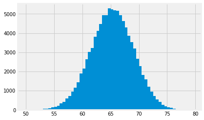
As we saw in the page on using minimize, we can get this value a little more
neatly by unpacking the return values from plt.hist, like this:
# Store the values that plt.hist returns.
# We will only use the first of these.
counts, edges, patches = plt.hist(sample_means, bins=bin_edges)
# Counts per bin (again):
counts
array([ 2., 3., 12., 10., 16., 21., 54., 56., 80.,
132., 152., 222., 327., 406., 585., 731., 956., 1167.,
1428., 1889., 2155., 2634., 3027., 3236., 3806., 4107., 4481.,
4939., 4935., 5287., 5253., 5188., 5174., 4946., 4639., 4291.,
3875., 3523., 3188., 2672., 2283., 1817., 1587., 1201., 961.,
722., 541., 421., 273., 189., 131., 107., 61., 41.,
23., 10., 11., 6., 3.])

If we show the counts as a bar graph, it is the same as the histogram, because it is using the same values. We use the bin centers instead of the bin edges for the x axis, as the histogram routine does, internally.
# Get bin centers by dropping the right hand edge, add half bin width.
bin_centers = bin_edges[:-1] + 0.25
bin_centers
array([50.25, 50.75, 51.25, 51.75, 52.25, 52.75, 53.25, 53.75, 54.25,
54.75, 55.25, 55.75, 56.25, 56.75, 57.25, 57.75, 58.25, 58.75,
59.25, 59.75, 60.25, 60.75, 61.25, 61.75, 62.25, 62.75, 63.25,
63.75, 64.25, 64.75, 65.25, 65.75, 66.25, 66.75, 67.25, 67.75,
68.25, 68.75, 69.25, 69.75, 70.25, 70.75, 71.25, 71.75, 72.25,
72.75, 73.25, 73.75, 74.25, 74.75, 75.25, 75.75, 76.25, 76.75,
77.25, 77.75, 78.25, 78.75, 79.25])
plt.bar(bin_centers, counts)
plt.title('Replicate sampling distribution using counts');
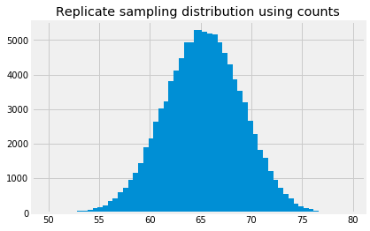
For each bin, counts gives the count of the 10000 samples we took had a mean
between the bin edges. For example, the center of the bin at index 20 is:
bin_centers[20]
60.25
This the bin counting all the sample mean values between 60 and 60.5. It has a lower edge of 60, and an upper edge of 60.5.
print('Lower edge:', bin_edges[20])
print('Upper edge (not included):', bin_edges[21])
Lower edge: 60.0
Upper edge (not included): 60.5
The count in that bin is:
counts[20]
2155.0
This is the count of the 100000 sample means from our estimated sampling distribution, that were from 60 up to, but not including, 60.5.
Dividing the counts by the number of samples, we get the proportion of samples that fall in this range:
proportions = counts / n_samples
proportions
array([0. , 0. , 0.0001, 0.0001, 0.0002, 0.0002, 0.0005, 0.0006,
0.0008, 0.0013, 0.0015, 0.0022, 0.0033, 0.0041, 0.0059, 0.0073,
0.0096, 0.0117, 0.0143, 0.0189, 0.0215, 0.0263, 0.0303, 0.0324,
0.0381, 0.0411, 0.0448, 0.0494, 0.0493, 0.0529, 0.0525, 0.0519,
0.0517, 0.0495, 0.0464, 0.0429, 0.0387, 0.0352, 0.0319, 0.0267,
0.0228, 0.0182, 0.0159, 0.012 , 0.0096, 0.0072, 0.0054, 0.0042,
0.0027, 0.0019, 0.0013, 0.0011, 0.0006, 0.0004, 0.0002, 0.0001,
0.0001, 0.0001, 0. ])
For example, here is the proportion of sample means that fell between 60 and 60.5:
proportions[20]
0.02155
In other words, given this estimated sampling distribution, for this world with a mean of 62.25, the probability of any one sample mean being between 60 and 60.5 is:
proportions[20]
0.02155
The bar graph of the proportions is the same as the histogram, but with the y values divided by the number of samples (100000):
plt.bar(bin_centers, proportions)
plt.title('Sampling distribution using proportions');
Now we are in a position to answer something approaching our intermediate question:
Problem 1: What is the probability that we will observe a sample mean of around 58.74, given that the population mean is 62.25.
One difficulty with this question is that we do not know what the sampling distribution would be for this hypothetical 2019 full set of marks, where the population mean is 62.25. For the moment, we will assume that the sampling distribution is exactly the same as it was in 2018; this is the sampling distribution we have already been using.
We find the bin corresponding to the sample mean of 58.74; this is the bin with center 58.75, with edges 58.5 and 59.0. It turns out this is the bin at index 17.
bin_58p75 = np.where(bin_centers == 58.75)
bin_58p75
(array([17]),)
Look back at where and argmin for the trick here of using np.where to find
the index.
We get the proportion at that index, to give the probability that we will see a sample mean between 58.5 and 59:
p_around_58p75 = proportions[bin_58p75]
p_around_58p75
array([0.0117])
We highlight this proportion in red:
plt.bar(bin_centers, proportions)
plt.bar(58.75, p_around_58p75, color='red')
# Store the x and y axis limits for later
xy_lims = plt.axis()
plt.title('Proportion for the 58.75 bin');
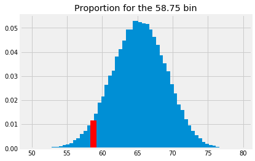
This is the probability of something close to our observed sample mean (58.74) given an eventual population mean of 62.25, and our assumed sampling distribution. The probability we have just found corresponds to the population mean. We start a new graph were we record the probability at its corresponding population mean:
plt.bar(62.25, p_around_58p75, color='red')
plt.axis(xy_lims) # Use the axis limits from the previous plot.
plt.title('Proportion against corresponding population mean');
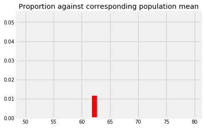
Let us try a slightly more difficult intermediate problem:
Problem 2: What is the probability that we will observe a sample mean of around 58.74, given that the population mean is 61.75?
Notice the new hypothetical population mean that is the population mean from 2018, minus 0.5.
For problem 1, we assumed the sampling distribution was the same as it was in 2018, when the mean was, in fact, around 62.25. Now we need the sampling distribution for the case where the mean is 0.5 less, at 61.75.
We will assume that the shape of this hypothetical sampling distribution does not change from the one we have used from 2018, but the center does change, from 62.25 to 62.75. In other words, our assumed sampling distribution shifts 0.5 to the left on the x axis:
plt.bar(bin_centers, counts, alpha=0.5, color='blue',
label='Original')
# Shift x values 0.5 (one bin) to the left.
bin_centers_1 = bin_centers - 0.5
plt.bar(bin_centers_1, counts, alpha=0.5, color='red',
label='Shifted')
plt.legend()
plt.title('Original, shifted 2018 sampling distribution');

With the shifted sampling distribution, we just follow the same recipe as we did for the population mean of 62.25.
bin_58p75_1 = np.where(bin_centers_1 == 58.75)
bin_58p75_1
(array([18]),)
This is the bin at index 18 instead of the bin at index 17, that we found last time. We have shifted the distribution one bin width to the left, so our corresponding bin in the sampling distribution is one bin to the right.
The proportion we want is:
p_around_58p75_1 = proportions[bin_58p75_1]
p_around_58p75_1
array([0.0143])
plt.bar(bin_centers_1, proportions)
plt.bar(58.75, p_around_58p75_1, color='red')
# Store the x and y axis limits for later
xy_lims = plt.axis()
plt.title('Proportion for 58.75 bin, pop mean 61.75');
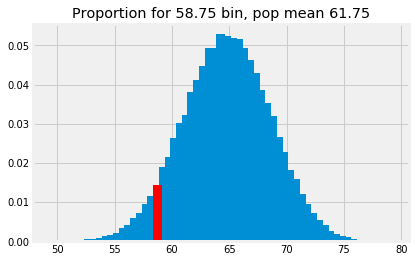
This is the probability of something close to our observed sample mean (58.74) given an eventual population mean of 61.75, and our assumed sampling distribution. The probability corresponds to the eventual population mean, so we add the probability value to the plot at this population mean:
# The previous p we found for 62.25
plt.bar(62.25, p_around_58p75, color='red')
# The new p we found for 61.75
plt.bar(61.75, p_around_58p75_1, color='red')
plt.axis(xy_lims) # Use the axis limits from the previous plot.
plt.title('Proportion against corresponding population mean');
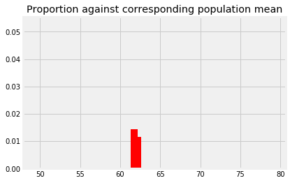
You can probably see how this is going to pan out now, but let us do the 61.25 bin for practice.
# Original distribution.
plt.bar(bin_centers, counts, alpha=0.5, color='blue',
label='Original')
# Shift x values by 1 (two bins) to the left.
bin_centers_2 = bin_centers - 1
plt.bar(bin_centers_2, counts, alpha=0.5, color='red',
label='Shifted by 2 bins')
plt.legend()
plt.title('Original, shifted-by-2 sampling distribution');
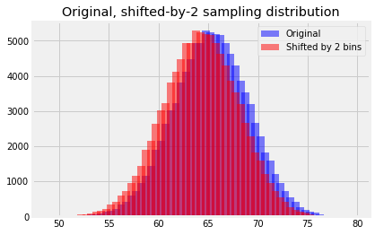
# We are now looking at the next bin to the right in the distribution.
bin_58p75_2 = np.where(bin_centers_2 == 58.75)
bin_58p75_2
(array([19]),)
p_around_58p75_2 = proportions[bin_58p75_2]
p_around_58p75_2
array([0.0189])
plt.bar(bin_centers_2, proportions)
plt.bar(58.75, p_around_58p75_2, color='red')
# Store the x and y axis limits for later
xy_lims = plt.axis()
plt.title('Proportion for 58.75 bin, pop mean 61.75');
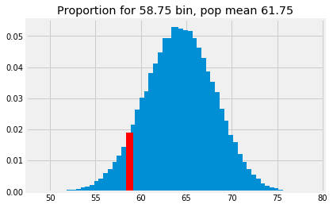
# The p we found for 62.25
plt.bar(62.25, p_around_58p75, color='red')
# The p we found for 61.75
plt.bar(61.75, p_around_58p75_1, color='red')
# The p we found for 61.25
plt.bar(61.25, p_around_58p75_2, color='red')
plt.axis(xy_lims) # Use the axis limits from the previous plot.
plt.title('Proportion against corresponding population mean');
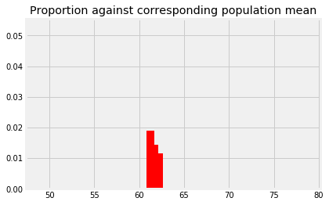
We can repeat this procedure for every population mean. For every population mean, we shift the sampling distribution, and get the corresponding probability of getting something in the bin of the observed sample mean of 58.74. This is the bin between 58.5 and 59, centered on 58.75.
# Bin centers at which to estimate probability.
population_means = np.arange(42.75, 67.75, 0.5)
population_means
array([42.75, 43.25, 43.75, 44.25, 44.75, 45.25, 45.75, 46.25, 46.75,
47.25, 47.75, 48.25, 48.75, 49.25, 49.75, 50.25, 50.75, 51.25,
51.75, 52.25, 52.75, 53.25, 53.75, 54.25, 54.75, 55.25, 55.75,
56.25, 56.75, 57.25, 57.75, 58.25, 58.75, 59.25, 59.75, 60.25,
60.75, 61.25, 61.75, 62.25, 62.75, 63.25, 63.75, 64.25, 64.75,
65.25, 65.75, 66.25, 66.75, 67.25])
n_means = len(population_means)
ps_for_mean = np.zeros(n_means)
for i in np.arange(n_means):
# Shift the x positions of the sampling distribution.
pop_mean = population_means[i]
mean_diff = 62.25 - pop_mean
new_bin_centers = bin_centers - mean_diff
# Find the bin corresponding to the sample mean.
is_our_bin = new_bin_centers == 58.75
# We might have gone too far, so there is no corresponding bin.
if np.count_nonzero(is_our_bin) == 0:
continue
# Store the probability for this population mean.
ps_for_mean[i] = proportions[is_our_bin]
ps_for_mean
array([0.0001, 0.0001, 0.0002, 0.0004, 0.0006, 0.0011, 0.0013, 0.0019,
0.0027, 0.0042, 0.0054, 0.0072, 0.0096, 0.012 , 0.0159, 0.0182,
0.0228, 0.0267, 0.0319, 0.0352, 0.0387, 0.0429, 0.0464, 0.0495,
0.0517, 0.0519, 0.0525, 0.0529, 0.0493, 0.0494, 0.0448, 0.0411,
0.0381, 0.0324, 0.0303, 0.0263, 0.0215, 0.0189, 0.0143, 0.0117,
0.0096, 0.0073, 0.0059, 0.0041, 0.0033, 0.0022, 0.0015, 0.0013,
0.0008, 0.0006])
plt.bar(population_means, ps_for_mean, color='red')
plt.title('P values for sample mean around 58.75 given population means');
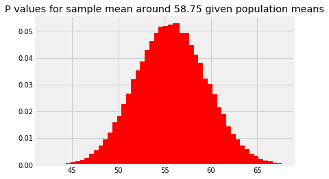
For reasons that might be clear from the calculations above, this probability distribution is our original assumed sampling distribution, but:
- Reversed so the right tail has become the left tail, and vice versa, and
- Shifted so that the mean of the distribution sits over the observed sample mean.
We can put both distributions on the plot to show this more clearly:
plt.bar(population_means, ps_for_mean, color='red',
alpha=0.5,
label='Probability of sample mean')
plt.bar(bin_centers, proportions, color='blue',
alpha=0.5,
label='Original proportions')
plt.legend(loc='lower left')
plt.title('P values for sample mean and sampling distribution');
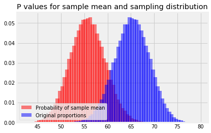
Reversing the probabilities
Remember that each of the p values in shown on the y axis in our red distribution above are: The probability of seeing a sample mean of around 52.75 given a population mean of the corresponding x value.
We want to reverse this probability. We want the probability that the population mean is a certain value (on the x axis), given that we have sample mean of around 58.75.
To do this, we follow the rules in reverse probability and Bayes bars.
These are:
- Get the probabilities of the sample mean given each population mean; these are the red values in the plot above. Call these the forward probabilities.
- Scale the forward probabilities by the initial or prior probability of each population mean (we will have to decide what those are).
- Divide the results by the sum of the results from step 2 to get the reverse or posterior probabilities.
For step 2, we will assume that there is an equal prior (initial) probability for each of our possible population means.
# All the population means we have tried have the same initial probability.
prior_pop_mean_ps = np.ones(n_means) / n_means
prior_pop_mean_ps
array([0.02, 0.02, 0.02, 0.02, 0.02, 0.02, 0.02, 0.02, 0.02, 0.02, 0.02,
0.02, 0.02, 0.02, 0.02, 0.02, 0.02, 0.02, 0.02, 0.02, 0.02, 0.02,
0.02, 0.02, 0.02, 0.02, 0.02, 0.02, 0.02, 0.02, 0.02, 0.02, 0.02,
0.02, 0.02, 0.02, 0.02, 0.02, 0.02, 0.02, 0.02, 0.02, 0.02, 0.02,
0.02, 0.02, 0.02, 0.02, 0.02, 0.02])
Continuing with step 2, we scale the forward probabilities by the prior probabilities, and divide by the resulting sum, to get the posterior (reverse) probabilities:
prior_times_forwards = prior_pop_mean_ps * ps_for_mean
posterior_ps = prior_times_forwards / np.sum(prior_times_forwards)
posterior_ps
array([0.0001, 0.0001, 0.0002, 0.0004, 0.0006, 0.0011, 0.0013, 0.0019,
0.0027, 0.0042, 0.0054, 0.0072, 0.0096, 0.012 , 0.0159, 0.0182,
0.0229, 0.0268, 0.0319, 0.0353, 0.0388, 0.043 , 0.0465, 0.0495,
0.0518, 0.0519, 0.0526, 0.0529, 0.0494, 0.0495, 0.0449, 0.0411,
0.0381, 0.0324, 0.0303, 0.0264, 0.0216, 0.0189, 0.0143, 0.0117,
0.0096, 0.0073, 0.0059, 0.0041, 0.0033, 0.0022, 0.0015, 0.0013,
0.0008, 0.0006])
These are now the probabilities of each population mean, given the sample mean of around 58.75.
plt.bar(population_means, posterior_ps, color='darkred')
plt.title('P of given population mean, given sample mean');
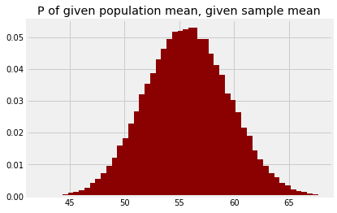
You might notice that this looks very much like the original plot (in red, above) of the probabilities of the sample mean, given the population means.
In fact is it is the same, and this is because:
- As you saw in reverse probability and Bayes bars, when all the prior (initial) probabilities are the same, we can skip the step of multiplying the forward (red) values by the prior (initial) probabilities.
- The forward (red) values were proportions, and so all the red values add up to 1, corresponding to all the sample means. Therefore, step 3, dividing by the sum, is dividing by 1, and doesn’t change the values.
The dark red distribution is very useful, because it can answer questions we are interested in.
Remember that each value in this plot is the probability of the corresponding population means (on the x axis), given the observed sample mean of around 58.75 (in fact the sample mean was 58.74, but we will ignore that small difference for now).
Remember too that the “population” we are interested in here is the eventual 7300 or so marks from 2019.
We see quickly that our sample mean makes it perfectly plausible that the eventual population mean will be at or above the previous mean of 62 or so, because a substantial proportion the area of the distribution corresponds to values of 62 or greater.
In fact, we could do better than this, and work out the population mean
threshold, such that about 5% of the distribution is above threshold. Call this
threshold t. Once we have found this value, t, we can say that there is
about a 95% chance that the eventual population mean will be less than or equal
to t. We could call t the 5% upper confidence limit, because we are 95%
confident that the eventual population mean will be less than or equal to this
value.
To get this value, we can use the np.cumsum function, first mentioned in the
arrays page. It takes an input array
say a, and returns another array, say b that is the same size as a, but
which has, at each element, the result of summing up all the elements in a up
to the corresponding position. This might be clearer by example:
# np.cumsum - for each element, add all elements so far.
a = np.array([1, 2, 5, 2, 0])
np.cumsum(a)
array([ 1, 3, 8, 10, 10])
We can do the same with the posterior probabilities:
cumulative_post_ps = np.cumsum(posterior_ps)
cumulative_post_ps
array([0.0001, 0.0002, 0.0004, 0.0009, 0.0015, 0.0025, 0.0038, 0.0057,
0.0085, 0.0127, 0.0181, 0.0253, 0.035 , 0.047 , 0.0629, 0.0811,
0.1039, 0.1307, 0.1626, 0.1979, 0.2367, 0.2797, 0.3261, 0.3756,
0.4274, 0.4794, 0.532 , 0.5849, 0.6344, 0.6838, 0.7287, 0.7698,
0.8079, 0.8403, 0.8706, 0.897 , 0.9186, 0.9375, 0.9518, 0.9635,
0.9731, 0.9804, 0.9862, 0.9903, 0.9936, 0.9958, 0.9973, 0.9986,
0.9994, 1. ])
Notice that, towards the end of this array, we reach 0.95; this means that the probability values up to this point add up to 0.95 or more; equivalently, that we already have 95% of the probability or more at this point.
In the following code, we get True if we have not yet reached 0.95, and False after that.
cum_ps_lte_0p95 = cumulative_post_ps <= 0.95
cum_ps_lte_0p95
array([ True, True, True, True, True, True, True, True, True,
True, True, True, True, True, True, True, True, True,
True, True, True, True, True, True, True, True, True,
True, True, True, True, True, True, True, True, True,
True, True, False, False, False, False, False, False, False,
False, False, False, False, False])
We want the largest of the corresponding population mean values, to get our
t.
t = np.max(population_means[cum_ps_lte_0p95])
t
61.25
This calculation tells us that, given our assumptions, there is a 95% chance
that the eventual population mean will be less than or equal to our found t.
t is our 95% upper confidence limit.
It looks like we are moderately confident that the mean of the marks will be less in 2019 than it was in 2018.
A short cut for the calculations
In this exposition, we started by breaking up the sampling distribution into a counts values from a histogram; converting the counts into a proportions, and then transforming the proportions by shifting on the x axis, and reversing them. We found this was our posterior probability distribution, and then we used the cumulative sum of this distribution to find our upper tail threshold.
In fact we can do equivalent operations without having to break up the distribution into counts, by applying the same transformations to the values in the sampling distribution.
Here is the sampling distribution (again):
plt.hist(sample_means, bins=bin_edges)
plt.xlabel('Mean mark for sample of 50')
plt.title('Estimated sampling distribution for mean of 50 marks');
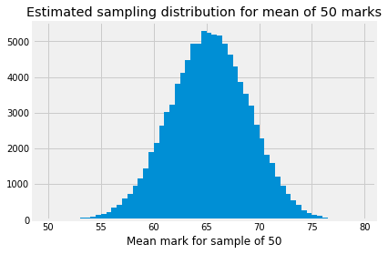
As we did for the proportions, we will shift this distribution to have a mean at the observed sample mean, and take the mirror image around this point, like this:
# Shift distribution to observed sample mean; take mirror image.
# Move distribution mean point to zero.
zero_centered = sample_means - 62.25
# Mirror image around zero point.
reversed = -zero_centered
# Add back the observed sample mean.
reversed_shifted = reversed + observed_sample_mean
# Show a histogram (and store the counts).
rs_counts, rs_edges, patches = plt.hist(reversed_shifted,
bins=np.arange(42.5, 67.75, 0.5),
color='darkgreen')
plt.title('Reversed, shifted sampling distribution');
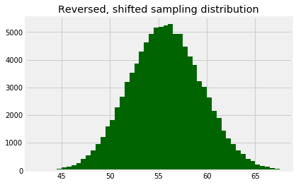
Here’s the same histogram, but built using the counts we got back from the call, just to show it is the same.
rs_centers = rs_edges[:-1] + 0.25
plt.bar(rs_centers, rs_counts, color='darkgreen')
plt.title('Reversed, shifted sampling distribution using counts');
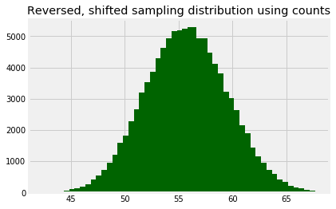
Notice that, if we divide the counts in this histogram by the number of samples, to get proportions, this looks very, very similar to the posterior probabilities we have just calculated. The plot below shows the populations superimposed; they overlap so completely that you cannot distinguish the two.
plt.bar(rs_centers, rs_counts / n_samples,
color='darkblue',
alpha=0.5,
label='Reversed, shifted p')
plt.bar(population_means, posterior_ps,
color='darkred',
alpha=0.5,
label='Posterior p')
plt.title('Reversed shifted and posterior p')
plt.legend(loc='lower left');
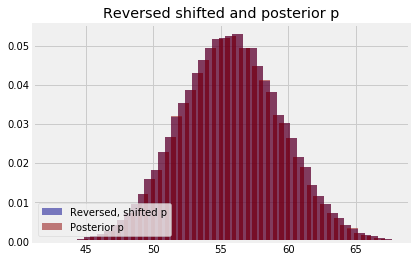
Using this reversed shifted version, we can get our threshold rather easily, by asking for the percentiles of the distribution.
rs_t = np.percentile(reversed_shifted, 95)
rs_t
61.97
This is the 95% percentile, so it is the value such that 95% of the values are less than this value, and 5% are greater than this value.
The reversed-shifted calculation is very similar to something called the Reverse Percentile Interval for the bootstrap (see below, and this Wikipedia section
As you see, the result is near identical to the approximation we used above when we broke the distribution into counts and used this for the posterior p calculation.
Estimating the sampling distribution
We emphasized given our assumptions. One big assumption that we made was that the sampling distribution of the mean was the same as that for 2018. That seems like a strong assumption; the sampling distribution of the mean will depend on the distribution of the values, and that may have changed in 2019.
To be more general, we might also want to deal with a situation where we do not have a roughly equivalent population to help us. Here we had the distribution of marks from 2018, but we will often be in the situation where we have a sample mean, and no population to compare against. What can we do to estimate the sampling distribution, if all we have is the sample — in our case, the sample of 50 marks from 2019?
Enter the bootstrap.